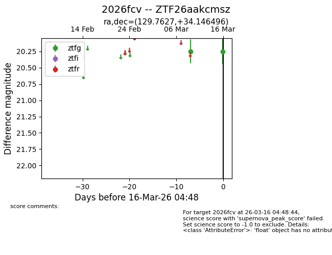
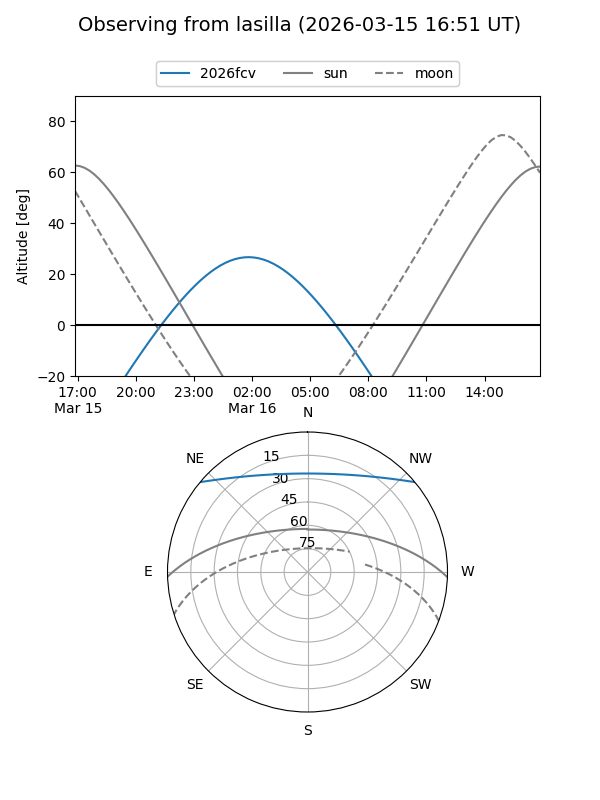
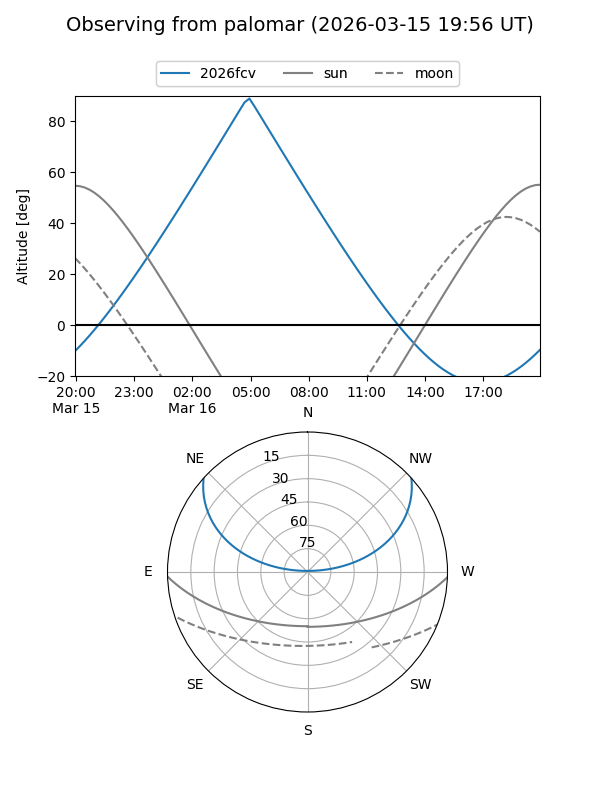

2026fcv
Target 2026fcv at 2026-03-16 04:50
Aliases and brokers:
FINK: link
Lasair: link
ALeRCE: link
TNS: link
YSE: link
alt names
ZTF26aakcmsz (ztf,fink_ztf)
2026fcv (tns,yse)
Coordinates:
equatorial (ra, dec) = 129.7627,+34.14650
equatorial (HMS+DMS) = 08:39:03.05,+34:08:47.39
galactic (l, b) = (188.9184,+36.10240)
Flags:
Photometry:
last ztfg=20.25
2 ztfg detections
Lightcurve

Visibility


Additional plots